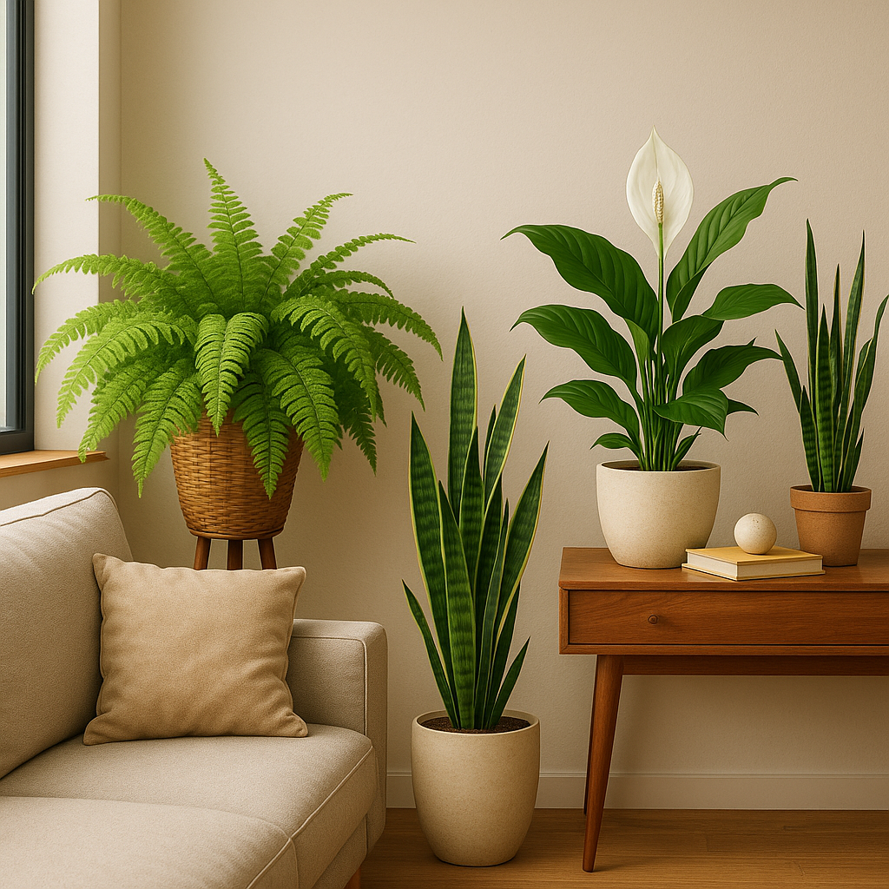

Top 5 plantas que purificam o ar e protegem seu lar (mas nem sempre seu gato)
Sim, existem plantas que fazem mais do que embelezar a casa — elas purificam o ar. A NASA já realizou estudos sobre isso, e muitos amantes de plantas adoram exibir esses exemplares. Mas cuidado: algumas dessas “heroínas verdes” escondem riscos para os gatos.
Abaixo, listamos cinco espécies populares por sua capacidade de filtrar toxinas do ar, explicando também o que elas significam para quem tem bichanos em casa.
1. Espada-de-São-Jorge (Sansevieria trifasciata)
Absorve formaldeído e benzeno, mas é tóxica para gatos. Ingestão pode causar vômitos e diarreia.
2. Jiboia (Epipremnum aureum)
Efetiva na purificação do ar, porém muito tóxica para felinos. Mantê-la fora de alcance é essencial.
3. Palmeira Areca (Dypsis lutescens)
Linda, filtradora de poluentes e totalmente segura para gatos. Uma das melhores escolhas!
4. Lírio da Paz (Spathiphyllum)
Um dos campeões em limpeza do ar... e também perigoso para gatos. Pode causar irritações e salivação.
5. Samambaia de Boston (Nephrolepis exaltata)
Boa para ambientes úmidos, filtra bem o ar e não oferece risco aos gatos. Ideal para banheiros e salas.
Nem tudo que é bom para o humano será bom para o gato. A chave é o equilíbrio: escolher espécies que embelezam, purificam e respeitam a natureza felina da casa. Felizmente, opções seguras não faltam!
🌿 Respire melhor, com consciência e carinho. Seu lar merece ar limpo e seu gato, segurança total.
← Voltar para o blog